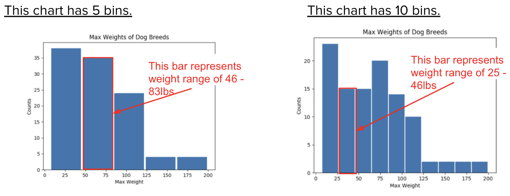

Lesson 8 - Histograms
At the end of this lesson, you will be able to:
- Create a histogram to visualize numeric data when a bar chart may be difficult to read.
Histograms
Histograms are similar to a bar chart, but first, all numbers in a range or bin are grouped together. In Pandas, we can specify the number of bins to use. The white space between each bar is for readability, it does not represent a gap. Look at the charts below. What are the differences? Which chart is more useful?

The histogram on the left splits the data into 5 buckets (called bins)- so weights of 47, 50, 77, and 81 would all be placed in the same bin between 46 and 83.
Questions:
- Why do you think I chose 5 bins for this chart?
- What is the most common range of maximum weights for dog breeds?
- What is the least common range of maximum weights for dog breeds?
Show Solution
- Using 5 bins, I get a good picture of the variety in weights. Using 10 bins does not give me any other information.
- The most common range is around 5-46 pounds. More dogs have weights in this bin than in the other bins.
- The least common range is around 124 - 198 pounds.
Information from histograms
Histograms can only be created with numeric data and can be useful when a normal bar chart may be difficult to read. Information we can get out of histograms:
- What range of value(s) are most common in this column?
- What range value(s) are least common in this column?
- What ranges of values do or do not appear in this column?
Max Weight histogram
Open this Colab Notebook and make a copy. Modify the number of bins to see what happens. Make a histogram for another column in the "Dogs" table and decide on the number of bins that helps you find an interesting pattern and answer the questions in the notebook text box.